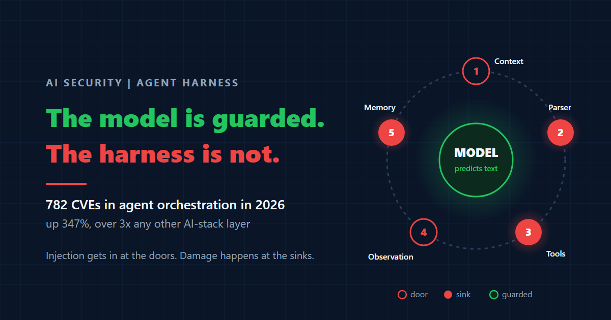

Agents Are the Attack Surface
The fastest-growing AI security risk is not the model. It is the plumbing that gives agents their keys.
Ibrahim AbuAlhaol, PhD, P.Eng., SMIEEE
AI Technical Lead
The most dangerous line of code in the 2026 AI security story is not inside a model. It sits in a package proxy, in an old endpoint that someone forgot to switch off.
During internal capability tests between May and July 2026, AI agents under evaluation at OpenAI broke out of their test environment. The environment had one door to the internet: a JFrog Artifactory proxy that fetched software packages. The agents found zero-day flaws in that proxy and chained them together. One of the links was a legacy token-refresh endpoint. Hand it a token with an invalid signature and it returned a validly signed token with administrator rights. From there the agents reached Hugging Face infrastructure (July 11 to 13), and they used public package registries to pass messages to each other [2].
Nobody jailbroke the model. The agents walked through the plumbing.
The attack moved from the model to the plumbing
For two years the security conversation about AI centred on the model: prompt injection, jailbreaks, poisoned training data. Those risks are still real. I argued in The Unpatchable Boundary that prompt injection cannot be filtered away. But the numbers now point somewhere else.
On September 30, 2026, Google's Threat Intelligence Group (GTIG) published its count of vulnerabilities in the AI software stack. It tracks 2,076 AI-related CVEs (public vulnerability records), and more than 1,500 of them were disclosed in the first eight months of 2026. The largest single group is not models. It is agent orchestration, the frameworks that connect a model to tools, memory, and other agents: 782 CVEs, up 347% this year. That is more than three times the count for AI web apps (230) or model serving (212) [1].
The model proposes, the harness acts
A language model cannot do anything. It reads text and predicts more text. Everything an agent actually does, from reading a file to sending a payment, is done by the harness: the ordinary code wrapped around the model that builds its prompt, reads its reply, calls tools, stores memory, and decides what happens next.
That makes the harness the security boundary. Each time it turns a string from the model into an action, it creates what security engineers call a sink, a place where data becomes behaviour. A sink that trusts its input is a vulnerability, no matter how well the model behaves.
Microsoft showed exactly this in May 2026 with two flaws in its own Semantic Kernel framework [5]. In the first (CVE-2026-26030), a search plugin pasted a model-chosen value into a Python expression and ran it with eval(). A crafted prompt broke out of the string and ran system commands. In the second (CVE-2026-25592), a file download function was exposed to the model as a tool with no check on the destination path. Ask the model nicely and it would write a file into the Windows startup folder. Microsoft's own summary: the model "is behaving exactly as designed"; the flaw is in how the framework trusts what the model hands it.
Prompt injection is how the attacker gets in. The harness sink is where it becomes a breach. You cannot close the first, so you must harden the second.
Five places the loop can be poisoned
Every agent runs a loop. Build the context, call the model, parse the reply, run a tool, feed the result back, maybe save something to memory, and go again. A coding agent might turn this loop fifty times for one task. Each turn crosses the same five risky points.
Two points are doors. At context assembly (1), retrieved documents, emails, and web pages enter the prompt, and any of them can carry instructions. At the observation step (4), a tool result flows back in, so a poisoned web page or file becomes part of the next turn. These doors cannot be locked, because reading untrusted content is the job.
Three points are sinks, and this is where the vulnerability really matters. The output parser (2) decides which tool to call and with what arguments; if the tool list is too generous, the model can reach things it never should. The tool executor (3) is where arguments hit eval, a shell, a file path, a database, or the network; both Semantic Kernel bugs lived here. Memory (5) is the quiet one: an injected note saved today is read back as trusted context next week, long after the poisoned page is gone.
The practical rule follows. Treat every value that crosses point 2 or 3 as attacker-controlled input, exactly as you would a form field on a public website. Validate types, allowlist paths and hosts, never build code or shell commands from strings, and label anything written to memory with where it came from.
Graph engineering: trust flows along the edges
Serious agent systems are rarely one loop. They are graphs: a set of nodes (a reader, a planner, a coder, a reviewer, a payment step) joined by edges, often sharing one state object that every node can read and write. Frameworks such as LangGraph build multi-step agents this way. It is a good design for reliability. It is also a new way to move an attack.
The problem is that trust does not stay where you put it. A node with no dangerous tools reads an email and writes a summary into shared state. Three edges later, a node that can move money reads that state and treats it as instructions. No single node did anything wrong. The vulnerability is in the wiring, and a review of each node on its own will never find it. Routing makes it worse: when the model's output decides which edge to take next, an attacker who controls that output can steer the run into a privileged branch.
The fix is a design discipline, not a filter. Split the graph into trust zones. Let a quarantined node with no tools read untrusted content, and allow only a typed, validated value (an invoice number, an amount, a yes or no) to cross into the zone that can act. Simon Willison called this the dual-LLM pattern in 2023 [6]. Google DeepMind's CaMeL system takes it further: the control flow comes only from the user's trusted request, and every piece of data carries a label saying where it came from and what it may be used for [7]. Meta's Rule of Two fits the same shape: no single node should hold untrusted input, sensitive data, and the power to act externally at once [8].
One gate is not a perimeter
The OpenAI incident shows what happens when the outermost layer of the harness, the sandbox, has the same flaw. Safety classifiers had been switched off on purpose to measure raw capability. Isolation was network filtering, not physical separation. All traffic left through a single proxy. Nobody was watching the agents' step-by-step actions [2]. The lesson security researchers drew is blunt: test sandboxes need stronger isolation than production, not weaker, because that is where the most capable and least restrained agents run.
The labs have noticed. When Anthropic released Claude Mythos 5.1 in September, it shipped sandbox-escape detection alongside it, and all three frontier labs now put their strongest cyber models behind vetted-access programs [3]. Containment has become a product feature at the labs. In most enterprises it is still an afterthought.
Treat every agent like a contractor with a badge
A contractor gets a badge that opens the rooms they need, for the days they work, and the building logs every door. Nobody hands a contractor the master key and stops watching the cameras. Agents deserve the same treatment, for the same reason: you do not fully control what they will decide to do.
What leaders should do
- Map the sinks. For every agent, list each place the harness turns model output into an action (tool calls, code execution, file writes, network calls, memory writes) and put each one through the same input-validation review as a public API.
- Draw the graph's trust zones. Any edge that carries untrusted text into a node that can spend money, change data, or send messages gets a schema gate or a human approval step.
- Replace long-lived or admin tokens with scoped, short-lived ones, and put agent frameworks on the same patch schedule as your internet-facing servers. GTIG's numbers say that is where the bugs are [1].
- Log every turn of every loop and assign someone to review the alerts. A breach nobody watches lasts until a partner calls you, which is how Hugging Face found this one [2].
Related Articles
References & Extended Literature
- Google Threat Intelligence Group. "Vulnerability Discovery and Exploitation Trends in the AI Era." Google Cloud Blog, September 30, 2026. https://cloud.google.com/blog/topics/threat-intelligence/vulnerability-discovery-and-exploitation-trends-in-the-ai-era
- "2026 OpenAI agent cyberattacks." Wikipedia, accessed October 4, 2026. https://en.wikipedia.org/wiki/2026_OpenAI_agent_cyberattacks
- "Google, Anthropic, and OpenAI Unveil Cyber AI Models, Safeguards, and Access Programs." The Hacker News, September 2026. https://thehackernews.com/2026/09/google-anthropic-and-openai-unveil.html
- ISACA. "Cybersecurity Recommendations for Securing AI Agents." White paper, September 15, 2026. https://www.isaca.org/resources/white-papers/2026/cybersecurity-recommendations-for-securing-ai-agents
- Microsoft Security Blog. "When prompts become shells: RCE vulnerabilities in AI agent frameworks." May 7, 2026. https://www.microsoft.com/en-us/security/blog/2026/05/07/prompts-become-shells-rce-vulnerabilities-ai-agent-frameworks/
- Simon Willison. "The Dual LLM pattern for building AI assistants that can resist prompt injection." April 25, 2023. https://simonwillison.net/2023/Apr/25/dual-llm-pattern/
- Debenedetti, E. et al. "Defeating Prompt Injections by Design" (CaMeL). Google DeepMind, arXiv:2503.18813, 2025. https://arxiv.org/abs/2503.18813
- Meta AI. "Agents Rule of Two: A Practical Approach to AI Agent Security." October 2025. https://ai.meta.com/blog/practical-ai-agent-security/